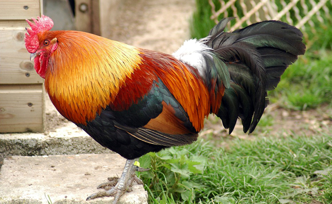

Qu'est-ce que le Poulailler !
Selon Wikipédia, Un poulailler est un bâtiment d'élevage de volaille, en particulier de poules, de taille modeste. Le terme peut désigner également l'enclos d'élevage à ciel ouvert pour les gallinaces. Les volailles aiment vivre à l'extérieur mais le poulailler procure un abri contre la neige, les prédateurs et pour la nuit. Chaque poule doit pouvoir disposer d'au minimum 0,5 m² de bâtiment.
Les poulaillers sont une forme d'agriculture vivrière, souvent entretenus à l'échelle familiale, comme ressource d'appoint, pour les œufs qu'ils permettent d'obtenir, comme loisir ou pour les deux. Ils peuvent être considérés comme complémentaires à un jardin potager, car les oiseaux peuvent être nourris des surplus ou déchets verts issus du potager.

Les animaux de la basse-cour
Nombre de fermes intègrent une basse-cour où l’on réunit différents animaux tels que :
Le lapin, la lapine et les lapereaux
Bien qu’il s’agisse de mammifères, les lapins sont généralement élevés avec les animaux de la basse-cour. Ils vivent en clapier ou dans des enclos herbeux. Ils sont très appréciés pour leur viande savoureuse et leur peau dont on confectionnait il y a encore quelques années manteaux et autres articles de mode.
La poule, le poussin, le poulet et le coq
On utilise leur viande et leurs œufs. Ces volatiles sont de plus en plus convoités par les particuliers si bien que, dans les petits jardins urbains, de nombreuses familles font leur propre élevage de gallinacés.
Le canard, la cane et les canetons
Les canards sont élevés dans les fermes pour leurs œufs et leur viande. Il existe certaines espèces de canards qui fournissent des plumes que l’on utilise dans l’industrie car elles constituent un bourrage de couettes, d’oreillers et de doudounes d’excellente qualité. A certaines périodes de l’année, les canards subissent un gavage ce qui permet d’obtenir ce fameux foie gras si cher aux épicuriens.
Le dindon, la dinde, le dindonneau
Ce majestueux oiseau est le plus grand de la basse-cour. Sa chair riche en protéines et relativement maigre est succulente, ce qui encourage l’élevage de ces Galliformes de la famille des Phasianidés résistants à de nombreuses conditions dès lors qu’ils sont abrités du froid. Les dindons sont reconnaissables rien qu’à l’ouïe, car leur cri est très particulier. On dit de ces oiseaux de la ferme qu’ils glougloutent.